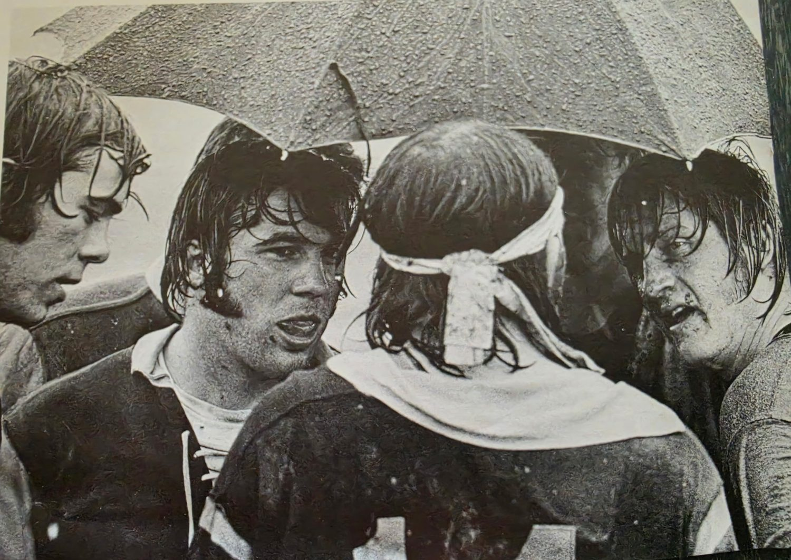

Pat Costigan: The Man Who Built the Tournament He Won
Most rugby players remember a championship. Very few can say they helped invent the competition they went on to win. Joseph Patrick “Pat” Costigan can. In March 1974 he was one of the two men who organised the first Big Eight Rugby Tournament, and when it began he pulled on a Missouri jersey, packed down at hooker, and captained the side that won it.
Costigan came to Mizzou Rugby in 1971 and played four seasons in the front row, graduating in 1974 with a degree in forestry. He arrived at a point when the club was still assembling itself. There was no conference competition to aim at, no collegiate championship, and no budget to speak of. Missouri played whoever would play them — college sides, and the established men's clubs from St. Louis, Kansas City, Iowa, Arkansas and Kansas.
Hooker is not a position that produces highlights. It is the middle of the front row, where the scrum is won or lost, and the job is to strike for the ball with two opposing packs driving through you. Teammates tend to notice who does that job well, and Costigan's did. Rick Wetzel, who played alongside him and served as club president, put it plainly more than fifty years later: “Rugby has a way of revealing character. When a match becomes difficult and everyone is tired, you learn very quickly which teammates you can depend upon. Pat was one of those men.”
By the 1973–74 season Costigan was one of the club's officers and, in 1974, its captain. That was the year everything came together. Wetzel and Costigan decided the Big Eight ought to have a rugby tournament, and then discovered what that actually meant: invitations, a draw, grounds, officials, and money — all of it handled by students who were carrying full course loads and playing every weekend. Costigan went out and secured Stag Beer as the tournament's sponsor, which for a self-funded college club in 1974 was no small thing. A letter from the Kansas State Rugby Football Club afterwards called it “the best organized tournament we've had the pleasure to participate in.”
Then he played in it. Missouri came through the draw at Reactor Field on March 2–3, beating Kansas State 34–0 and Nebraska 16–4, and met Iowa State in the final. The Tigers won 19–18. Missouri became the first Big Eight rugby champion, and Costigan — organiser, officer, hooker, captain — had a hand in every part of it.
What happened after Mizzou says as much about him as the championship does. Costigan took a job in Lincoln, Nebraska, and immediately tried to start a rugby club at the University of Nebraska. Roughly ten men turned up to the first practice. He kept at it, held several more sessions, and in the end could not find enough players to field a side. He moved to Brookfield, Missouri, to buy timber for the Missouri Valley Walnut Company, and tried again — recruited about ten men who had never played, ran practices, and again fell short of a full squad. Neither attempt worked. Both were made anyway.
His career stayed in forestry. He returned to Nebraska as a District Forester responsible for the eastern half of the state, moved into forestry planning, and pursued graduate study in adult and continuing education. Later he crossed to the industry side, buying walnut in St. Joseph, Missouri, for the gunstock, lumber and veneer trades — work that put his degree and decades of dealing with landowners to the same use.
The habit of stepping forward never left him. He rose through the Fraternal Order of Elks to serve two years as Exalted Ruler and two more as a Trustee. Back in Oak Grove, Missouri, he joined the Oak Grove Historical Society and is now its president.
Costigan has stayed in touch with his Mizzou teammates for over fifty years, and remains close to Rick Wetzel, Jim Dierker and John Tarpoff. He regrets not staying more closely connected to the club itself after graduation. What he remembers of the rugby is not the trophy: it is playing hooker, the friendships, the matches, and the fellowship that followed them — with sides from across the Big Eight and with the clubs from St. Louis, Iowa, Arkansas, Kansas and Kansas City.
Every club depends on people willing to do the unglamorous work that makes the good days possible. Costigan did that work, and then went out and won the thing he had built.


“Pat Costigan gave Mizzou Rugby his talent, his leadership, his work, and his loyalty.” — Rick Wetzel